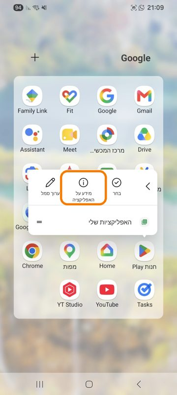
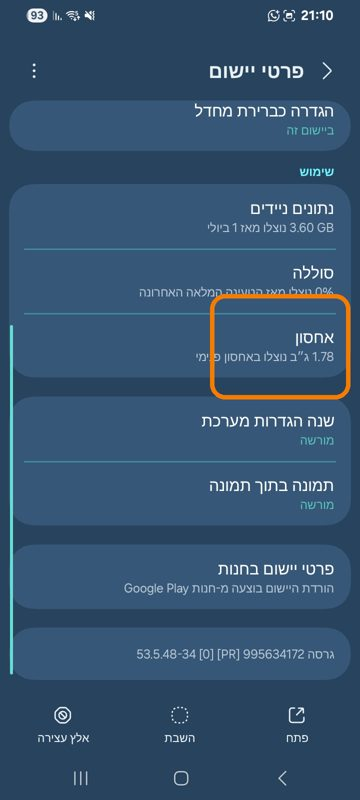
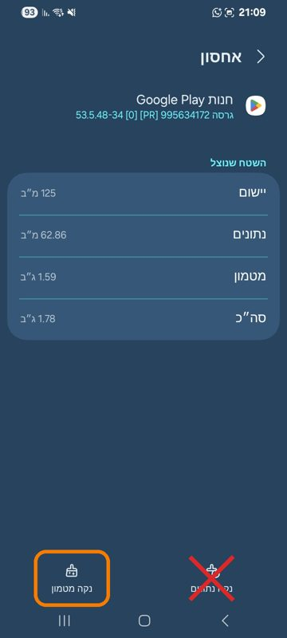

הוראות לבודקים
תודה שאתם עוזרים לבדוק את לוח עברי
1. שולחים את כתובת ה-Gmail
שולחים ל-natanor.kalfa@gmail.com את כתובת ה-Gmail שמחוברת ל-Google Play בטלפון שלכם. רק כתובת שנמצאת ברשימת הבודקים יכולה להתקין את האפליקציה.
2. מצטרפים לבדיקה
- אחרי שקיבלתם אישור שהכתובת נוספה, פותחים בטלפון, בדפדפן Chrome, את הקישור:
הצטרפות לבדיקה - מוודאים שבפינה העליונה של העמוד מחובר אותו חשבון ששלחתם.
- לוחצים Accept או הפוך לבודק.
3. מתקינים
- בעמוד ההצטרפות לוחצים Download it on Google Play, או פותחים ישירות את לוח עברי ב-Google Play.
- לוחצים התקנה.
4. מפעילים סנכרון עם Google Calendar (לא חובה)
- באפליקציה: התפריט ⋮ ← הגדרות ← מפעילים את סנכרון עם Google Calendar.
- אם מופיע המסך "Google לא אימתה את האפליקציה", לוחצים מתקדם ואז המשך ללוח עברי, ומאשרים גישה ליומן. המסך הזה זמני, עד שהאימות אצל Google יסתיים.
אם משהו לא עובד
"App not available" או "Your account hasn't been invited"
הכתובת עוד לא ברשימת הבודקים, או שבטלפון מחובר חשבון אחר. בודקים שהכתובת ששלחתם היא זו שמחוברת, ואם צריך כותבים לנו.
"הפריט לא נמצא" או חלון Google Play ריק
פותחים את Google Play, לוחצים על תמונת הפרופיל בפינה ובוחרים את החשבון שהוזמן. אם הקישור נפתח בתוך WhatsApp, פותחים אותו שוב ב-Chrome.
עדיין לא מופיע
אחרי ההוספה לרשימה זה יכול לקחת עד כמה שעות. אם עבר זמן ועדיין לא מופיע, מנקים את המטמון של Google Play, לפי ההוראות למטה.
מצאתם באג או יש רעיון?
כותבים ל-natanor.kalfa@gmail.com, ואם אפשר מצרפים צילום מסך.
ניקוי המטמון של Google Play
ניקוי מטמון לא מוחק אפליקציות, חשבונות או נתונים. הוא רק גורם ל-Google Play לטעון מחדש את הרשימות שלה.
הדרך הקצרה (כמעט בכל טלפון)
הצילומים מטלפון סמסונג. בטלפונים אחרים השמות יכולים להיות מעט שונים, אבל הסדר זהה.
- לחיצה ארוכה על הסמל חנות Play (המשולש הצבעוני), ובתפריט שנפתח לוחצים מידע על האפליקציה (הסמל ⓘ).

- נפתח המסך פרטי יישום. גוללים קצת למטה ולוחצים אחסון.

- במסך אחסון לוחצים למטה על נקה מטמון. לא לוחצים על נקה נתונים.

- חוזרים למסך הבית, פותחים שוב את קישור ההצטרפות ב-Chrome, ולוחצים Download it on Google Play.
אם אין תפריט בלחיצה ארוכה
- פותחים את הגדרות הטלפון (גלגל השיניים).
- לוחצים אפליקציות (בסמסונג: יישומים).
- מחפשים ברשימה את Google Play Store ולוחצים עליה. אם היא לא ברשימה, לוחצים קודם על הצג את כל האפליקציות.
- ממשיכים מצעד 2 למעלה: אחסון ← נקה מטמון.